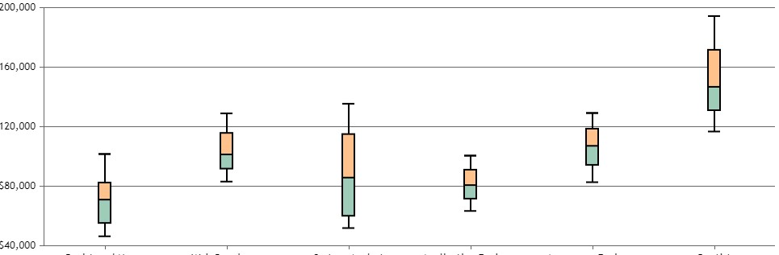

<nav [ngClass]="expand ? '' : 'hide'" class="navbar navbar-expand-lg  navbar-dark nav-explore-bg">
    <a class="navbar-brand js-scroll-trigger" href="#frontPageContainer"></a>
    <button class="navbar-toggler" type="button" data-toggle="collapse" data-target="#navbarSupportedContent" aria-controls="navbarSupportedContent" aria-expanded="false" aria-label="Toggle navigation">
        <span class="navbar-toggler-icon"></span>
    </button>

    <div class="collapse navbar-collapse" id="navbarSupportedContent">
        <ul class="navbar-nav mr-auto">
            <li class="nav-item">
                <a href="#About" class="nav-link js-scroll-trigger" >About</a>
            </li>
            <li class="nav-item">
                <a href="#Team" class="nav-link js-scroll-trigger" >Team</a>
            </li>
            <li class="nav-item">
                <a href="#Download" class="nav-link js-scroll-trigger" >Download</a>
            </li>
            <li class="nav-item">
                <a href="#Faq" class="nav-link js-scroll-trigger" >FAQ</a>
            </li>
            <li class="nav-item">
                <a href="#Citation" class="nav-link js-scroll-trigger" >Publications</a>
            </li>
        </ul>
        <div class="form-inline my-2 my-lg-0 padding-20">
            <i class="fas fa-question-circle fa-1x color-white expand"></i>
        </div>
        <div class="form-inline my-2 my-lg-0 padding-20">
            <i class="fas fa-expand fa-1x color-white expand" (click)="toggleExpand()"></i>
        </div>
        <div class="form-inline my-2 my-lg-0 padding-20">
            <a href="#"><i class="fab fa-github fa-1x color-white"></i></a>
        </div>
    </div>
</nav>
<div [ngClass]="expand ? 'hide' : ''" class="minimal-navbar-right">
        <i class="fas fa-question-circle fa-1x color-white expand small-icon"></i>
        <i class="fas fa-expand fa-1x color-white expand small-icon" (click)="toggleExpand()"></i>
        <a href="#"><i class="fab fa-github fa-1x color-white small-icon"></i></a>
</div>
<div [ngClass]="searchSize ? 'searchPanel': 'searchPanel-hide'" id="searchPanel">
    <div [ngClass]="searchSize ? 'select-panel': 'select-panel-hide'">
        <div class="container">
            <div class="row row-content">
                <h2 [ngClass]="searchSize ? '' : 'hide'">Explore</h2>
                <i [ngbPopover]="popContent"
                   [autoClose]="false" placement="right" #p="ngbPopover"
                   [ngClass]="searchSize ? 'fa-caret-left close-btn' : 'fa-bars close-burger'" class="fas fa-2x" (click)="toggleSearchBar()" ></i>
            </div>
        </div>
        <mat-tab-group  [ngClass]="searchSize ? '' : 'hide'" [selectedIndex]="position" animationDuration="10ms">
            <mat-tab label="Graph" #graphTip="ngbTooltip" tooltipClass="tool-tip-custom" placement="top" ngbTooltip="Function Call Graphes">
                <ejs-treeview  cssClass="customTree" #treeGraph (nodeSelected)="onNodeSelectedGraph($event)" class="ejs-tree" id="default"  [fields]='graphFields'></ejs-treeview>
            </mat-tab>
            <mat-tab label="Image" #imageTip="ngbTooltip" tooltipClass="tool-tip-custom" placement="right" ngbTooltip="Image Data Graphs">
                <ejs-treeview cssClass="customTree" #tree (nodeSelected)="onNodeSelectedImage($event)" class="ejs-tree" id="default"  [fields]='fields'></ejs-treeview>
            </mat-tab>
        </mat-tab-group>
    </div>
</div>
<div id="statsPanel" [ngClass]="searchSize ? '' : 'hide'">
    <div class="statsContainer">
        <ul>
            <li *ngFor="let item of stats | keyvalue">
                <div *ngIf="item.key === 'density' || item.key === 'edges' || item.key === 'entropy' || item.key === 'nodes'" class="container-img">
                    
                    <div class="centered">{{item.key}}</div>
                </div>
            </li>
        </ul>
    </div>
</div>
<div id="graph-container"></div>
<ng-template #popContent>
    Hello
    <button>click</button>
</ng-template>
<!--                        
-->
